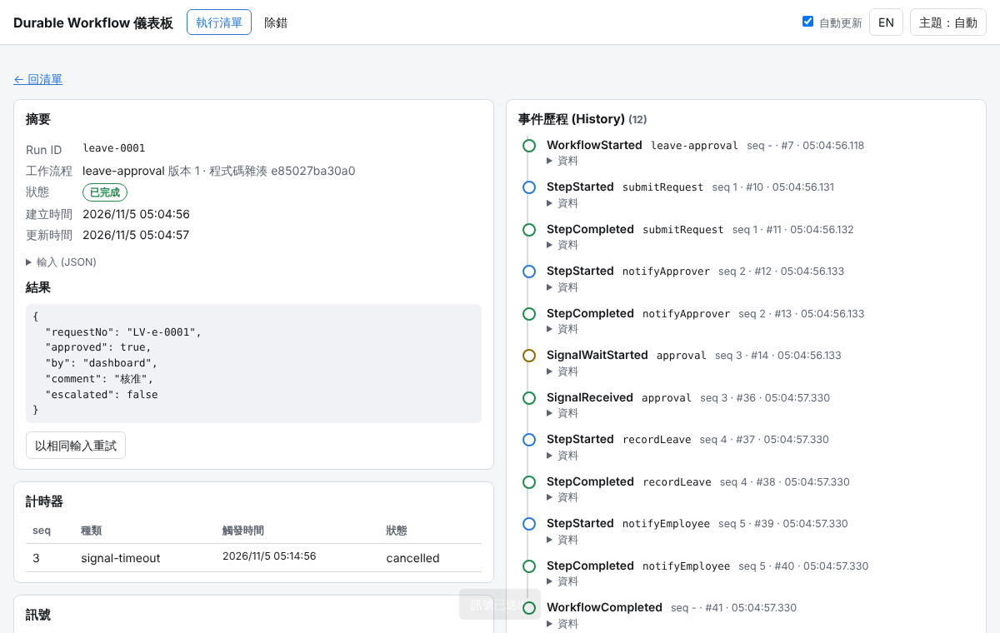
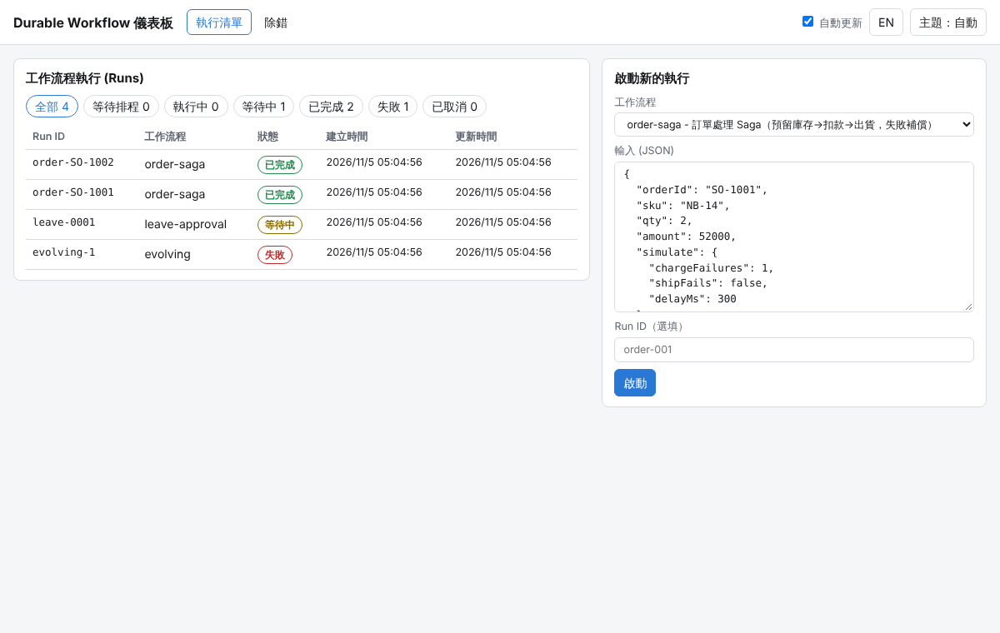
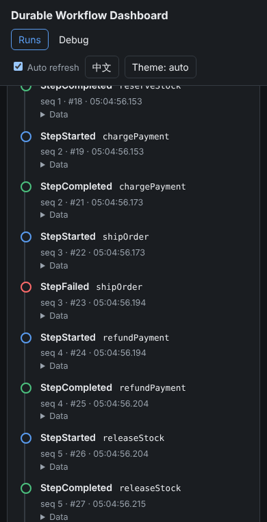

概覽
這是一個小型、可讀懂的 durable execution 引擎，概念與 Temporal、Azure Durable Functions 相同：工作流程 (workflow) 用一般的 async 函式撰寫，所有對外副作用都透過 ctx.step() 執行並把結果寫入 SQLite；程序當掉或重開機後，引擎從頭重播工作流程函式，已完成的步驟直接回傳歷程中的結果，不會再執行一次。
- 零執行期相依套件：只用 Node.js 22 內建的
node:sqlite（SQLite 3.53）、node:http、node:test。 - Context API：
ctx.step(name, fn, {retry, timeoutMs})、ctx.sleep(ms)、ctx.waitForSignal(name, {timeout})、ctx.now()/ctx.random()/ctx.uuid()/ctx.sideEffect()、ctx.patched(id)、ctx.log()。 - 耐久性：事件歷程 (history_events)、計時器、訊號、具租約 (lease) 與心跳的工作佇列，全部在一個 SQLite 檔；多個程序（儀表板、worker、CLI）可共用。
- 可靠性：指數退避重試、不可重試錯誤、Saga 補償、取消 (cancel)、崩潰復原（租約到期由其他 worker 接手）、租約圍籬 (fencing) 防止兩個 worker 同時寫同一個 run。
- 決定性防護：重播時若程式碼呼叫的步驟和歷程不一致，丟出
NonDeterminismError，run 標記為失敗，儀表板以紅色橫幅清楚顯示是哪個 seq、預期什麼、實際呼叫什麼。 - 示範流程：訂單處理 Saga（預留庫存 → 扣款 → 出貨，失敗依反序補償）、請假簽核（等待核准訊號，逾時升級，再逾時自動駁回）、批次報表（步驟間 durable sleep，用來示範 kill/重啟）。
- 儀表板：執行清單（狀態篩選）、事件歷程時間軸、計時器 / 訊號 / 工作佇列狀態、送訊號（含「核准 / 駁回」按鈕）、取消、以相同輸入重試；繁體中文預設、English 切換、淺色 / 深色、手機寬度可用、除錯頁顯示日誌與 worker。
- CLI：
wf start、wf signal、wf status、wf worker、wf serve、wf cancel、wf retry。

版本：0.1.0 ・ Node.js 22.5 以上（在 v22.23.4 實測）・ SQLite 3.53.4（node:sqlite 內建）・ 測試用 Playwright 為全域安裝版本（非本專案相依）。
核心概念：history、replay、determinism
1. 事件歷程 (history) 才是真相
引擎不保存「執行到一半的 JavaScript 堆疊」——那在程序當掉時就消失了。它只保存一串只增不改的事件：每次 ctx.* 呼叫會依呼叫順序拿到一個序號 seq，相關事件（例如 StepStarted / StepCompleted、TimerStarted / TimerFired、SignalWaitStarted / SignalReceived）都帶著這個 seq 寫入 history_events。
2. 重播 (replay)
每當 run 需要往前推進（計時器到期、訊號到達、worker 重開），worker 就從頭執行整個工作流程函式。執行到第 N 個 ctx.* 呼叫時：
- 如果歷程中 seq N 已有結果 → 直接回傳（不執行 activity）。這就是重播。
- 如果沒有 → 這裡是「前線 (frontier)」：真正執行 activity、建立計時器、或檢查訊號，並把結果寫入歷程。
- 如果還不能完成（計時器未到、訊號未到、重試退避中）→ 回傳一個永遠不會 resolve 的 Promise；當沒有任何 activity 在執行時，run 被「暫停 (suspend)」，工作佇列設定在最早的喚醒時間再執行。
3. 決定性 (determinism) 規則
因為工作流程函式會被重播很多次，每次重播必須以相同順序發出相同的 ctx 呼叫。所以工作流程程式碼（activity 以外）不可以：
- 直接用
Date.now()、new Date()、Math.random()、crypto.randomUUID()來決定流程 → 改用ctx.now()、ctx.random()、ctx.uuid()（第一次執行時記錄，重播時回傳記錄值）。 - 直接呼叫 HTTP、資料庫、檔案 → 放進
ctx.step()的 activity 函式裡。 await非 ctx 的 Promise（例如setTimeout）→ 用ctx.sleep()。- 讀取會變動的全域狀態或環境變數來決定分支 → 把它放進輸入 (input) 或
ctx.sideEffect()。
違反時，引擎在重播比對 seq 的「種類 + 名稱」時就會發現不一致，丟出 NonDeterminismError，例如：
replay diverged at seq 1: history recorded step "reserve" but workflow code now calls step "validate"若程式碼刪掉了步驟，導致函式提早結束而歷程還有更後面的 seq，也會被偵測（"workflow code returned after seq N, but history has recorded commands up to seq M"）。要安全地改版，請見 開發者指南：版本演進。
4. 保證與語意
| 項目 | 語意 |
|---|---|
| 工作流程程式碼 | 可能被執行很多次（重播），但每個 seq 的結果只記錄一次。 |
| activity（ctx.step 的 fn） | 至少一次 (at-least-once)：完成後不會再執行；但若 worker 在 activity 執行中途當掉，重啟後會再執行一次（歷程會出現兩個 StepStarted）。請用 idempotencyKey（runId:seq）讓外部系統去重。 |
| 計時器 | 到期時間存在 SQLite，程序關掉也不會遺失；到期後由任何 worker 觸發（不早於到期時間，可能稍晚 = 輪詢間隔）。 |
| 訊號 | 先存入 signals 表；工作流程還沒走到 waitForSignal 時會先緩衝，之後依 FIFO 消化。對已結束的 run 送訊號會被拒絕 (HTTP 409)。 |
| 租約 | 同一個 run 同時只會有一個 worker 執行；寫入歷程時會檢查租約持有者（fencing），失去租約的 worker 寫入會失敗並放棄該 task。 |
快速開始
Windows（繁體中文 Windows）
- 安裝 Node.js 22.5 以上（需要內建的
node:sqlite，建議 22 LTS 最新版）。 - 在本資料夾雙擊
start-dashboard.bat：它切換到程式所在資料夾 → 呼叫start-dashboard.ps1→ 執行node bin/wf.mjs serve --open，自動開啟瀏覽器http://127.0.0.1:8710/。 - 不需要
npm install（沒有執行期相依套件）。資料預設存放在%ProgramData%\NewMiscCode\10-durable-workflow\data\workflow.db，日誌在同層的logs\。 - 命令列操作用
wf.bat，例如wf.bat status、wf.bat worker。若不想每次結束時暫停，先set WF_NOPAUSE=1。 - 執行測試：雙擊
run-tests.bat（等同npm test；Playwright 測試需另外安裝，見下方）。
未在 Windows 實機驗證：啟動器 (.bat / .ps1) 依照慣例撰寫並已檢查編碼（.bat 純 ASCII + CRLF、.ps1 為 UTF-8 BOM + CRLF），但開發環境是 Linux，未在真正的 Windows 上執行過。若 %ProgramData% 無寫入權限，請用 --data-dir / --log-dir 或環境變數 WF_DATA_DIR / WF_LOG_DIR 改到使用者資料夾。
Linux / macOS
cd 10-durable-workflow
./start.sh # = node bin/wf.mjs serve（儀表板 + 內嵌 worker）
# 另開終端機：
node bin/wf.mjs start leave-approval
node bin/wf.mjs status
npm testLinux 上資料預設在專案下的 ./data，日誌在 ./logs（兩者都在 .gitignore）。
Playwright（只有 e2e 測試需要）
e2e 測試 test/e2e.test.mjs 用 require('playwright')；找不到時該測試會標示為 skipped，其餘測試照跑。要在自己的電腦跑 e2e：
npm i -D playwright
npx playwright install chromium
npm run test:e2e使用說明
儀表板
- 執行清單：上方狀態晶片（全部 / 等待排程 / 執行中 / 等待中 / 已完成 / 失敗 / 已取消）可篩選；點一列進入明細。每 1.5 秒自動更新（可關閉；游標在輸入框時暫停更新）。
- 啟動新的執行：選工作流程，輸入框會自動填入範例 JSON，可修改後按「啟動」。
- 執行明細：摘要（狀態、版本、程式碼雜湊、等待中的項目）、結果 / 錯誤、事件歷程時間軸（每個事件可展開資料）、計時器、訊號、工作佇列租約。
- 操作：送出訊號（請假簽核有「核准 / 駁回」快速按鈕）、取消執行（會在工作流程中丟出
CancelledError，訂單 Saga 會跑補償）、已結束的 run 可「以相同輸入重試」（建立新 run，記錄 retry_of）。 - 除錯頁：worker 清單與心跳、待觸發計時器、伺服器程序的最近日誌（可依等級篩選）。
- 右上角：EN / 中文 切換語言（記在 localStorage，也可用
?lang=en）、主題（自動 → 淺色 → 深色）。

CLI：wf
| 指令 | 說明 |
|---|---|
wf serve [--port 8710] [--host 127.0.0.1] [--no-worker] [--open] | 儀表板 + REST API；預設同時啟動內嵌 worker。 |
wf worker [--concurrency 4] [--lease-ms 15000] [--poll-ms 250] | 獨立 worker 程序，可開多個（不同機器需共用同一個 SQLite 檔，見限制）。 |
wf start <workflow> [--input JSON | --input-file f.json] [--id runId] [--wait] | 啟動 run；省略 input 時用該工作流程的範例輸入。--wait 等到結束並印出結果。 |
wf signal <runId> <name> [--payload JSON | --payload-file f.json] | 送外部訊號。 |
wf status [runId] [--status waiting] [--json] | 沒有 runId：列出 runs；有 runId：顯示狀態與完整歷程。 |
wf cancel <runId> / wf retry <runId> / wf workflows | 取消、以相同輸入重試、列出已註冊工作流程。 |
共通參數：--data-dir、--log-dir、--db、--workflows <module>（載入自訂工作流程）、--debug。Windows 用 wf.bat；Linux 用 node bin/wf.mjs（或 npm link 後直接 wf）。
PowerShell 傳 JSON 字串容易被引號吃掉，建議用檔案：
wf.bat start order-saga --input-file examples\order-input.json
wf.bat signal leave-approval-xxxx approval --payload-file examples\approval-yes.json示範工作流程
| 名稱 | 流程 | 輸入重點 |
|---|---|---|
order-saga 訂單處理 | reserveStock → chargePayment（最多 4 次、500ms 起指數退避）→ shipOrder → notifyCustomer。任一步永久失敗或被取消 → 依反序執行 refundPayment、releaseStock。 | simulate.chargeFailures：扣款前 N 次暫時失敗；simulate.shipFails：出貨丟出不可重試錯誤；simulate.delayMs：每步模擬耗時。 |
leave-approval 請假簽核 | submitRequest → notifyApprover → 等待 approval 訊號；逾時 → escalate（升級給上一層主管）→ 再等一次；再逾時 → 自動駁回 → recordLeave（核准時）→ notifyEmployee。 | timeoutMs、escalationTimeoutMs（預設各 120 秒）。訊號內容 {"approved":true,"by":"陳經理","comment":"同意"}。 |
batch-report 批次報表 | buildPart1..N，中間各 ctx.sleep(sleepMs)；開頭結尾用 ctx.now() 計算耗時。 | parts（預設 4）、sleepMs（預設 5000）。 |
逐步驗證指南
步驟 1：自動測試
npm test預期結果（本機實測輸出節錄，總計約 10 秒）：
✔ wf start -> wf signal -> wf worker -> wf status
✔ worker killed (SIGKILL) during a durable sleep and during an activity; restarts resume from history
✔ dashboard: list runs, filter, timeline, approve via UI, non-determinism banner, language/theme toggle, 390px, no console errors
▶ replay
✔ each step runs exactly once although the workflow function is replayed several times
▶ durable timer
✔ sleep survives a worker/engine restart and fires after its due time
▶ signals
✔ signal delivered before the timeout resolves the wait with its payload
✔ timeout fires when no signal arrives
✔ signal sent before the workflow waits is buffered
✔ leave-approval demo escalates after timeout then accepts approval
▶ retries
✔ exponential backoff between attempts, then success
✔ non-retryable error fails immediately; exhausted retries surface StepFailedError
▶ saga
✔ order-saga compensates in reverse order when shipping fails
✔ order-saga happy path with one transient charge failure
▶ non-determinism
✔ changing step order in code while a run is in flight is detected and reported
✔ ctx.patched() lets new code take a new branch only for new runs
▶ task routing
✔ a worker only claims runs of workflows it has registered
▶ cancel and retry
✔ cancelling a waiting run throws CancelledError into the workflow (compensation runs)
ℹ tests 17
ℹ pass 17
ℹ fail 0其中 崩潰復原測試（test/crash.test.mjs）真的啟動 bin/wf.mjs worker 子程序兩次並以 SIGKILL 殺掉：第一次在 durable sleep 期間、第二次在一個慢 activity 執行中；第三個 worker 等租約到期後接手完成。每個 activity 會把一行寫進 effects 檔，測試斷言 s1/s2/s3/s5 各只出現一次；被中斷的 s4 執行了兩次（at-least-once）但靠 idempotencyKey 只提交一次。
步驟 2：手動 kill-and-restart 示範
開兩個終端機（Windows 用 wf.bat 取代 node bin/wf.mjs）。
- 終端機 A：
node bin/wf.mjs worker→ 預期看到INFO [worker] worker started。 - 終端機 B：
node bin/wf.mjs start batch-report --input-file 檔案（內容{"parts":4,"sleepMs":3000}；Linux 可直接--input '{"parts":4,"sleepMs":3000}' --id demo-kill）→started demo-kill (batch-report)。 - 約 4 秒後
node bin/wf.mjs status demo-kill：狀態waiting，歷程停在第二個TimerStarted。 - 在終端機 A 強制結束 worker（Linux：
kill -9 <pid>；Windows：工作管理員結束 node.exe 或直接關閉視窗）。 node bin/wf.mjs status→ run 仍是waiting（狀態在 SQLite，沒有遺失）。- 重新啟動 worker：
node bin/wf.mjs worker。約 9 秒後status demo-kill→completed。
實測輸出（Linux，節錄）：
--- before kill
demo-kill workflow=batch-report v1 status=waiting
waiting on: timer until 11/5/2026, 4:53:40 AM
#3 04:53:34.348 seq=2 StepStarted buildPart1
#4 04:53:34.348 seq=2 StepCompleted buildPart1
#5 04:53:34.348 seq=3 TimerStarted
#6 04:53:37.353 seq=3 TimerFired
#7 04:53:37.354 seq=4 StepStarted buildPart2
#8 04:53:37.354 seq=4 StepCompleted buildPart2
#9 04:53:37.354 seq=5 TimerStarted
killed worker pid 32253
--- after kill
waiting demo-kill batch-report 11/5/2026, 4:53:34 AM
--- after restart
demo-kill workflow=batch-report v1 status=completed
result: {"parts":4,"totalRows":1000,"elapsedMs":9181}
#9 04:53:37.354 seq=5 TimerStarted
#10 04:53:40.521 seq=5 TimerFired
#11 04:53:40.521 seq=6 StepStarted buildPart3
...
#16 04:53:43.528 seq=8 StepCompleted buildPart4
#18 04:53:43.528 seq=- WorkflowCompleted判讀：buildPart1、buildPart2 各只有一組 StepStarted/StepCompleted（重啟後是重播，沒有重做）；第 5 號計時器在 worker 被殺時仍待觸發，新 worker 啟動後照原到期時間觸發。若 worker 是在 activity 執行中 被殺，該 task 的租約（預設 15 秒）到期後才會被接手，日誌會出現 WARN [worker] recovered task from expired lease。
步驟 3：儀表板 + 訊號
- 執行
start-dashboard.bat（或npm start），開啟http://127.0.0.1:8710/→ 預期看到「Durable Workflow 儀表板」，介面為繁體中文。 - 右側選
leave-approval→ 按「啟動」→ 自動跳到明細，狀態「等待中」，時間軸最後是SignalWaitStarted approval，計時器表有一個signal-timeout。 - 按「✔ 核准」→ 約 1 秒內狀態變「已完成」，時間軸出現
SignalReceived、recordLeave、WorkflowCompleted，計時器變cancelled（見概覽的截圖）。 - 啟動
order-saga，把shipFails改成true→ 結果status: "compensated"，時間軸可見StepFailed shipOrder之後依序refundPayment、releaseStock。 - 按右上角 EN → 介面變英文；按「主題」切換淺色 / 深色。

步驟 4：非決定性偵測（自行體驗）
- 啟動一個
leave-approval（timeout 設大一點），讓它停在等待核准。 - 停止伺服器，修改
src/workflows/leave-approval.js：在submitRequest前面加一行await ctx.step('precheck', async () => 1);。 - 重新啟動並按「核准」→ run 變成「失敗」，明細頁上方出現紅色橫幅「偵測到非決定性」，訊息
replay diverged at seq 1: history recorded step "submitRequest" but workflow code now calls step "precheck"。 - 改用
if (ctx.patched('precheck')) await ctx.step('precheck', ...)就能讓舊 run 走舊路徑、新 run 走新路徑（測試ctx.patched()已涵蓋）。記得把檔案改回來。
步驟 5：文字編碼與文件檢查
node ../tools/audit-text.mjs . # 預期 problems=0
node ../tools/check-docs.mjs --no-browser # 預期本資料夾沒有問題開發者指南
架構
bin/wf.mjs CLI（serve / worker / start / signal / status / cancel / retry）
src/config.js 資料 / 日誌路徑（OS 判斷）、環境變數
src/logger.js JSONL 日誌 + 記憶體 ring buffer（儀表板除錯頁）
src/store.js node:sqlite schema 與查詢（WAL、busy_timeout、交易、租約）
src/engine.js Engine（client API）+ Execution（重播執行器）+ WorkflowContext（ctx）
src/worker.js Worker 迴圈：claim task（租約）→ 心跳 → executeRunTask → finishTask
src/server.js REST API + 靜態檔（public/）
src/saga.js Saga 補償小工具
src/errors.js NonDeterminismError / NonRetryableError / StepFailedError / TimeoutError / CancelledError
src/workflows/ 示範工作流程（order-saga / leave-approval / batch-report）
public/ 儀表板（原生 JS，無建置步驟）
test/ node:test 測試（engine / crash / cli / e2e）與 fixtures一個 workflow task 的生命週期：(1) start/signal/cancel 呼叫 enqueue(runId)（每個 run 最多一筆 task，gen+1）→ (2) worker 以單一 UPDATE … RETURNING 原子地取得可見且未被租用（或租約已過期）的 task → (3) 每 leaseMs/3 延長租約 → (4) 載入歷程並重播工作流程函式 → (5) 結果：完成 / 失敗 / 取消（刪除 task）或暫停（task 的 visible_at 設成最早的喚醒時間；只等訊號且沒有逾時則刪除 task，訊號到達時再 enqueue）。執行期間若 gen 改變（例如剛好收到訊號），task 會立即重新排入。
SQLite schema
| 資料表 | 主要欄位 | 用途 |
|---|---|---|
workflow_runs | id, workflow, version, code_hash, status, input, result, error, waiting_on, cancel_requested, retry_of, created_at, updated_at, completed_at | 每個 run 一列；status ∈ pending / running / waiting / completed / failed / cancelled。 |
history_events | id (自增), run_id, seq, type, name, data (JSON), ts | 只增不改的事件歷程（重播的依據）。 |
timers | run_id, seq, kind (sleep / signal-timeout / retry), fire_at, status | 待觸發計時器（供顯示與查詢；實際喚醒靠 tasks.visible_at）。 |
signals | run_id, name, payload, status (pending / consumed), consumed_seq | 外部訊號收件匣。 |
tasks | run_id (PK), visible_at, gen, lease_owner, lease_expires_at, prev_owner, attempts | 工作佇列 + 租約。 |
workers | id, pid, host, workflows, started_at, heartbeat_at, stopped_at | worker 註冊與心跳（儀表板顯示）。 |
meta | key, value | schema_version = 1。 |
事件種類：WorkflowStarted、StepStarted、StepAttemptFailed、StepCompleted、StepFailed、TimerStarted、TimerFired、SignalWaitStarted、SignalReceived、SignalTimedOut、SideEffectRecorded、CancelRequested、Patched、WorkflowCompleted、WorkflowFailed、WorkflowCancelled。
REST API
| 方法 | 路徑 | 說明 |
|---|---|---|
| GET | /api/health | 存活檢查、資料庫路徑、內嵌 worker id。 |
| GET | /api/workflows | 已註冊工作流程（name, version, codeHash, title, sampleInput, signals）。 |
| GET | /api/runs?status=&workflow=&limit= | 列出 runs（新到舊）。 |
| POST | /api/runs | body {"workflow":"leave-approval","input":{…},"runId":"選填"} → 新 run。重複 runId 回 409。 |
| GET | /api/runs/:id | run + events + timers + signals + task + codeChanged。 |
| POST | /api/runs/:id/signal | body {"name":"approval","payload":{…}}；已結束回 409。 |
| POST | /api/runs/:id/cancel | 要求取消（協作式：下一個 ctx 呼叫丟出 CancelledError）。 |
| POST | /api/runs/:id/retry | 對已結束的 run 以相同輸入建立新 run（retry_of）。 |
| GET | /api/stats | 各狀態數量、task 數、待觸發計時器、workers。 |
| GET | /api/logs?level=&runId=&limit= | 伺服器程序記憶體中的最近日誌。 |
錯誤一律回 {"error":"訊息","name":"…"}，狀態碼 400 / 404 / 409 / 500。API 沒有驗證機制，預設只綁 127.0.0.1。
如何撰寫工作流程
// my-workflows.mjs
import { defineWorkflow } from './src/engine.js';
import { NonRetryableError } from './src/errors.js';
export const invoice = defineWorkflow({
name: 'invoice',
version: '1',
title: { 'zh-TW': '開立發票', en: 'Issue invoice' },
sampleInput: { customer: 'C001', amount: 1200 },
signals: ['confirm'],
async handler(ctx, input) {
const no = await ctx.step('allocateNumber', async a => {
// a = { runId, seq, attempt, idempotencyKey, log }
return callErp('/invoice/number', { key: a.idempotencyKey });
}, { retry: { maxAttempts: 5, initialIntervalMs: 1000, backoffCoefficient: 2, maxIntervalMs: 30000, nonRetryableErrors: ['ValidationError'] }, timeoutMs: 10000 });
try {
await ctx.waitForSignal('confirm', { timeout: 24 * 3600 * 1000 });
} catch (e) {
if (e.name !== 'TimeoutError') throw e;
await ctx.step('voidInvoice', async () => callErp('/invoice/void', { no }));
return { voided: true };
}
await ctx.sleep(5 * 60 * 1000);
const at = await ctx.now();
return { no, sentAt: at };
},
});
export const workflows = [invoice];執行：node bin/wf.mjs serve --workflows ./my-workflows.mjs（worker 與 CLI 也要加同一個 --workflows）。要成為內建示範，就加進 src/workflows/index.js 的 demoWorkflows。
- activity 回傳值必須可 JSON 序列化（會存進歷程；重播時拿到的是 JSON 還原值）。
- 想讓失敗不重試：丟
NonRetryableError，或設定err.nonRetryable = true，或把錯誤名稱放進retry.nonRetryableErrors。 - 永久失敗時
ctx.step丟出StepFailedError（stepName、attempts、cause），工作流程可 catch 後做補償（見src/saga.js與order-saga）。 - 可用
Promise.all([ctx.step('a', …), ctx.step('b', …)])平行執行；seq 依呼叫順序分配，重播時順序相同即可。 - 工作流程內的日誌用
ctx.log(msg, fields)：重播時不會重複輸出。
版本演進（避免非決定性）
- 只改 activity 內部實作（fn 內容）：安全，重播不執行 activity。
- 新增 / 刪除 / 重排 ctx 呼叫：對進行中的 run 不安全。做法 A：用
ctx.patched('變更代號')包住新邏輯（舊 run 回傳 false，新 run 回傳 true）；做法 B：用新的工作流程名稱（例如order-saga-v2），舊 run 跑完再移除舊版。 - 每個 run 記錄啟動時的
code_hash（handler 原始碼 SHA-256 前 12 碼）。程式碼變更後，明細頁顯示黃色提醒「程式碼已變更」；真正不相容時才會變成非決定性錯誤。
測試
| 指令 | 內容 |
|---|---|
npm test | 全部（約 10 秒，依序執行）。 |
npm run test:engine | 重播次數、耐久計時器跨重啟、訊號 / 逾時 / 緩衝、重試退避、不可重試、Saga 補償順序、非決定性、patched、取消。 |
npm run test:crash | SIGKILL 子程序 worker 兩次後重啟完成，無重複副作用。 |
npm run test:e2e | Playwright：清單、篩選、明細時間軸、UI 核准、語言 / 主題切換、390px 無水平捲動、無 console error；輸出截圖到 examples/。 |
測試暫存資料夾預設在系統 temp，可用環境變數 WF_TEST_TMP 指定；WF_TEST_LOG=1 會把引擎日誌印到終端機。
版本
| 元件 | 版本 |
|---|---|
| 本專案 | 0.1.0 |
| Node.js | 需要 ≥ 22.5（node:sqlite）；實測 v22.23.4 |
| SQLite | 3.53.4（Node 內建） |
| 執行期 npm 套件 | 無 |
| Playwright（僅 e2e 測試） | 開發環境的全域安裝版本；未列為相依 |
變更紀錄
- 0.1.0（2026-11-05）：第一版。重播執行器、ctx API（step / sleep / waitForSignal / sideEffect / now / random / uuid / patched / log）、租約工作佇列與 fencing、崩潰復原、重試退避、取消、Saga、非決定性偵測、三個示範工作流程、REST API、儀表板（zh-TW / en、淺色 / 深色、除錯頁）、CLI、Windows 啟動器、測試 17 項。
與 Azure Durable Functions / Temporal .NET SDK 對照
說明：下表的 Durable Functions（isolated worker, TaskOrchestrationContext）與 Temporal .NET SDK（Temporalio）API 名稱是依記憶整理，未在本專案中實際編譯或執行驗證；不同版本可能有差異，請以官方文件為準。
| 本專案 | Durable Functions (C#) | Temporal .NET SDK |
|---|---|---|
工作流程 defineWorkflow({ handler(ctx, input) }) | Orchestrator：[Function] … ([OrchestrationTrigger] TaskOrchestrationContext context) | [Workflow] 類別 + [WorkflowRun] 方法 |
ctx.step(name, fn)（activity，inline 執行） | context.CallActivityAsync<T>("Name", input) | Workflow.ExecuteActivityAsync(…) |
{ retry: { maxAttempts, initialIntervalMs, backoffCoefficient } } | TaskOptions.FromRetryPolicy(new RetryPolicy(…)) | ActivityOptions.RetryPolicy |
NonRetryableError / nonRetryableErrors | RetryPolicy 的 handle 委派（較有限） | ApplicationFailureException(nonRetryable: true) / NonRetryableErrorTypes |
ctx.sleep(ms) | context.CreateTimer(fireAt, ct) | Workflow.DelayAsync(…) |
ctx.waitForSignal(name, { timeout }) → 逾時丟 TimeoutError | context.WaitForExternalEvent<T>(name, timeout) → TimeoutException | [WorkflowSignal] 方法 + Workflow.WaitConditionAsync(…, timeout) |
wf signal / POST /api/runs/:id/signal | client.RaiseEventAsync(instanceId, name, data) | handle.SignalAsync(…) |
ctx.now() / ctx.random() / ctx.uuid() | context.CurrentUtcDateTime / context.NewGuid() | Workflow.UtcNow / Workflow.Random / Workflow.NewGuid() |
ctx.patched(id) | 主要靠新 orchestrator 名稱或版本化部署 | Workflow.Patched(id) |
NonDeterminismError（run 標記失敗） | NonDeterministicOrchestrationException | Workflow task 失敗（nondeterminism）；預設不會讓 workflow 失敗，而是卡住重試直到修正程式 |
wf cancel（協作式 CancelledError） | TerminateInstanceAsync（強制終止，不會跑補償） | handle.CancelAsync()（CancellationToken，可跑清理） |
wf retry（新 run、相同輸入） | Rewind（預覽功能）/ 重新啟動 | Reset 到某個事件 |
history_events 表 | History table（Azure Storage provider） | Temporal Server 中的 Event History |
tasks 表 + 租約 | control / work-item queues | Task Queue + Worker 長輪詢 |
| 儀表板 | Durable Functions Monitor / DTS dashboard | Temporal Web UI |
| （未實作）子工作流程、Query、Update、continue-as-new | CallSubOrchestratorAsync、custom status、ContinueAsNew | Workflow.ExecuteChildWorkflowAsync、[WorkflowQuery]、[WorkflowUpdate]、ContinueAsNewException |
主要差異
- Activity 執行位置：本專案在同一個 worker task 內「就地」執行 activity，沒有獨立的 activity task queue；慢的 activity 會占用該 run 的工作租約（有心跳延長）。Temporal / Durable Functions 會把 activity 排到獨立佇列、可分散到其他 worker。
- 非決定性的處理：本專案直接讓 run 失敗並清楚報告；Temporal 預設讓 workflow task 一直重試（run 不會失敗），以便部署修正後繼續 （依記憶，未驗證）。
- 規模：單一 SQLite 檔，適合單機 / 小團隊工具、學習原理；不是分散式叢集。
- C# 思維對應：
await ctx.step(...)就像await context.CallActivityAsync(...)；「orchestrator 程式碼必須 deterministic」的規則完全相同（不要用DateTime.Now/Guid.NewGuid()，改用 context 提供的版本）。
除錯與日誌
JSONL 日誌
每個程序把日誌附加到 <logDir>/wf-YYYY-MM-DD.jsonl（依 UTC 日期換檔），每行一個 JSON：ts、level（debug / info / warn / error）、pid、comp（engine / executor / worker / activity / workflow / http）、msg，以及 runId、workflow、step、workerId、err 等欄位。
{"ts":"2026-11-05T04:53:34.277Z","level":"info","pid":32320,"comp":"engine","msg":"run started","runId":"demo-kill","workflow":"batch-report"}--debug（或WF_DEBUG=1）輸出 debug 等級：每次執行 workflow task、每個 step 完成、暫停與喚醒時間、API 請求耗時。- 路徑：Windows 預設
%ProgramData%\NewMiscCode\10-durable-workflow\logs，Linux./logs；可用--log-dir或WF_LOG_DIR修改。 - PowerShell 篩選某個 run：
Get-Content .\logs\wf-2026-11-05.jsonl | ConvertFrom-Json | Where-Object runId -eq 'demo-kill' - Linux：
grep '"runId":"demo-kill"' logs/*.jsonl
儀表板除錯頁
上方「除錯」分頁顯示 worker 心跳、待觸發計時器、統計，以及伺服器程序的最近 200 筆日誌（可依等級篩選）。網址加 ?debug=1 時前端會把每個 API 呼叫印到 console.debug。儀表板不會阻擋 DevTools（F12 隨時可用）。
Node 偵錯器
node --inspect bin/wf.mjs serve --debug
node --inspect-brk bin/wf.mjs worker開啟 Chrome 的 chrome://inspect → Open dedicated DevTools for Node，在 src/engine.js 的 executeRunTask 或你的工作流程中下中斷點。注意：工作流程函式在每次喚醒時都會從頭重播，中斷點會被觸發多次；用 ctx.isReplaying 判斷是否為重播。
直接查 SQLite
node -e "const {DatabaseSync}=require('node:sqlite');const db=new DatabaseSync('data/workflow.db');console.table(db.prepare('select seq,type,name from history_events where run_id=?').all('demo-kill'))"限制與疑難排解
已知限制
- 沒有子工作流程、Query、Update、continue-as-new；歷程會一直增長（長期迴圈型流程請改成定期結束並重新啟動新 run）。
- activity 至少一次執行；外部副作用請用
idempotencyKey去重。 - activity 在 worker 內 inline 執行，沒有獨立 activity 佇列；長時間 activity 會占用一個併發槽。
- 取消是協作式：只有在工作流程下一次呼叫 ctx 時才生效；正在執行的 activity 不會被中斷。
- 單一 SQLite 檔（WAL）：多程序同一台機器可用；不要把資料庫放在網路磁碟（SMB）上給多台機器共用。
- REST API 無驗證，預設只綁 127.0.0.1；若改
--host 0.0.0.0，請自行加反向代理與驗證。 - 計時器精度約等於 worker 輪詢間隔（預設 250ms）。
node:sqlite在 Node 22 仍標示為實驗性功能（程式已隱藏該警告）。- Windows 啟動器未在 Windows 實機測試（見快速開始）。
疑難排解
| 症狀 | 原因 / 處理 |
|---|---|
No such built-in module: node:sqlite | Node 版本太舊，請升級到 22.5 以上。 |
run 一直是 pending | 沒有 worker 在跑：用 wf serve（預設內嵌 worker）或另開 wf worker；兩者必須指向同一個 --data-dir。worker 只領取自己有註冊的工作流程，自訂工作流程記得在 worker 加上 --workflows（除錯頁的 worker 清單可看到各 worker 的程序資訊）。 |
run 失敗：NonDeterminismError | 進行中的 run 遇到不相容的程式碼變更；見 版本演進。可用「以相同輸入重試」重新開始。 |
| kill worker 後 run 過了十幾秒才繼續 | activity 執行中被殺，要等租約到期（預設 15 秒，可用 --lease-ms 調整）。 |
database is locked | 有其他程式長時間鎖住資料庫（例如 DB 瀏覽工具開著交易）；已設定 busy_timeout 5 秒。 |
| 連接埠 8710 已被使用 | start-dashboard.bat --port 8711 或環境變數 WF_PORT。 |
| PowerShell 顯示亂碼 | 啟動器已設定 UTF-8 輸出；若仍亂碼，請改用 Windows Terminal。 |
English summary
A small, readable durable execution engine for Node.js 22 using the built-in node:sqlite (no runtime npm dependencies). Workflows are plain async functions using a context API: ctx.step(name, fn, {retry, timeoutMs}) for activities whose results are persisted, ctx.sleep(ms) for durable timers, ctx.waitForSignal(name, {timeout}) for external events (e.g. human approval), ctx.now()/random()/uuid()/sideEffect() for deterministic values, and ctx.patched(id) for versioning.
- Event-sourced history + replay: every ctx call gets a sequence number; on each wake-up the workflow function re-runs from the start and calls already recorded in history return their stored result instead of re-executing.
- Task queue with leases and heartbeats in SQLite; history writes are fenced by lease ownership. If a worker is killed (SIGKILL), the lease expires and another worker resumes the run from history - completed steps are not executed again (activities are at-least-once if killed mid-activity; an idempotency key is provided).
- Exponential-backoff retries, non-retryable errors, saga compensation, cooperative cancellation, and a non-determinism guard that fails the run with a clear message when replay diverges from history.
- Demo workflows: order saga (reserve → charge → ship with reverse compensation), leave approval (signal wait with escalation on timeout), batch report (durable sleeps; kill/restart demo).
- Web dashboard (zh-TW default, English toggle, light/dark, mobile), REST API, and CLI:
wf serve | worker | start | signal | status | cancel | retry. - Verification:
npm testruns 17 tests including a crash test that SIGKILLs a real worker child process twice, and a Playwright dashboard test that approves a leave request through the UI. - Windows:
start-dashboard.bat,wf.bat,run-tests.bat(ASCII .bat → UTF-8 BOM .ps1 → node). Data/logs default to%ProgramData%\NewMiscCode\10-durable-workflowon Windows and./data,./logselsewhere. The launchers were not tested on real Windows.